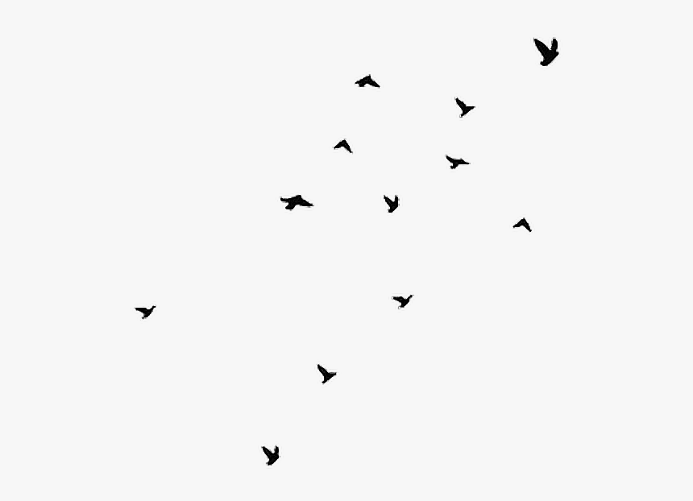
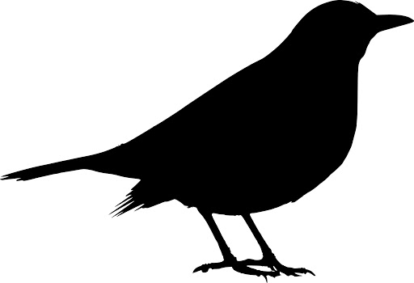
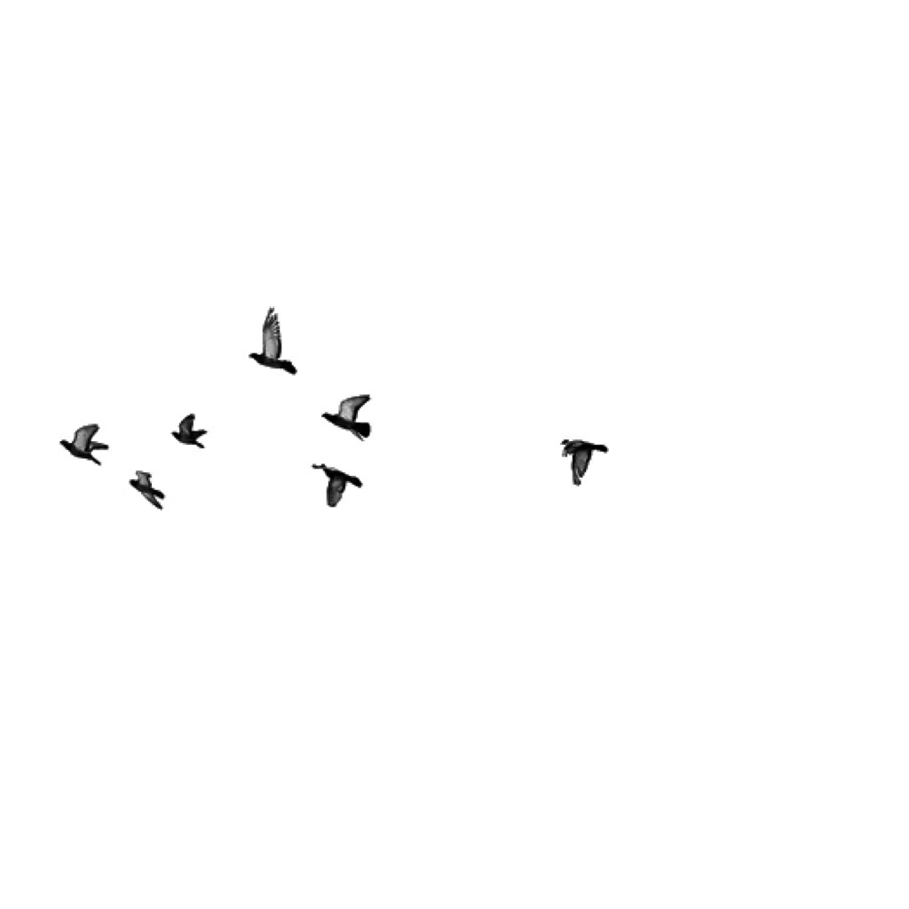

The only moving thing
Wash the eye of the blackbird.
Like a tree
In which there are three blackbirds.
It was a small part of the pantomime.
Are one.
A man and a woman and a blackbird
Are one.
The beauty of inflections
Or the beauty of innuendoes,
The blackbird whistling
Or just after.
With barbaric glass.
The shadow of the blackbird
Crossed it, to and fro.
The mood
Traced in the shadow
An indecipherable cause.

Why do you imagine golden birds?
Do you not see how the blackbird
Walks around the feet
Of the women about you?
And lucid, inescapable rhythms;
But I know, too,
That the blackbird is involved
In what I know.
It marked the edge
Of one of many circles.

Flying in a green light,
Even the bawds of euphony
Would cry out sharply.
In a glass coach.
Once, a fear pierced him,
In that he mistook
The shadow of his equipage
For blackbirds.
The blackbird must be flying.
It was snowing
And it was going to snow.
The blackbird sat
In the cedar-limbs.
I
Among twenty snowy mountains,The only moving thing
Wash the eye of the blackbird.
II
I was of three minds,Like a tree
In which there are three blackbirds.
III
The blackbird whirled in the autmn winds.It was a small part of the pantomime.
IV
A man and a womanAre one.
A man and a woman and a blackbird
Are one.
V
I do not know which to prefer,The beauty of inflections
Or the beauty of innuendoes,
The blackbird whistling
Or just after.
VI
Icicles filled the long windowWith barbaric glass.
The shadow of the blackbird
Crossed it, to and fro.
The mood
Traced in the shadow
An indecipherable cause.
VII
O thin men of Haddam,Why do you imagine golden birds?
Do you not see how the blackbird
Walks around the feet
Of the women about you?
VIII
I know noble accentsAnd lucid, inescapable rhythms;
But I know, too,
That the blackbird is involved
In what I know.
IX
When the blackbird flew out of sight,It marked the edge
Of one of many circles.
X
At the sight of blackbirdsFlying in a green light,
Even the bawds of euphony
Would cry out sharply.
XI
He rode over ConnecticutIn a glass coach.
Once, a fear pierced him,
In that he mistook
The shadow of his equipage
For blackbirds.
XII
The river is moving.The blackbird must be flying.
XIII
It was evening all afternoon.It was snowing
And it was going to snow.
The blackbird sat
In the cedar-limbs.